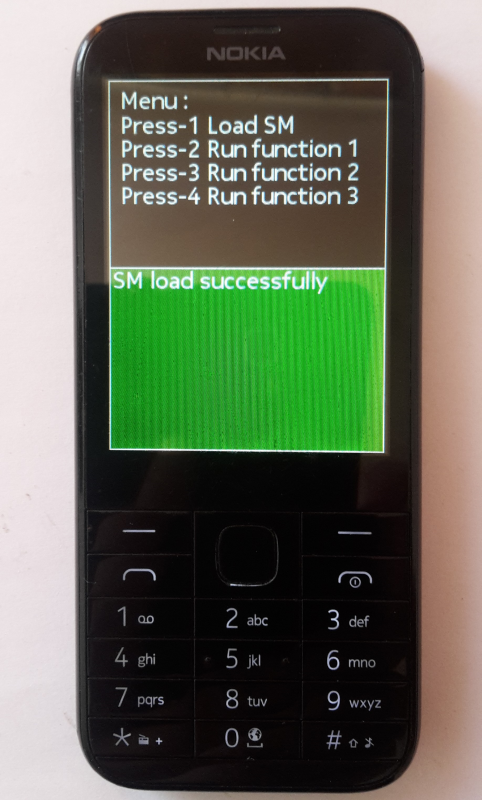

Basic client for testing shared module functionality for MRE platform (including Nokia S30+). Tested on Nokia 225 with display resolution 240x320. "vsm_srv.vsm" must be located on same directory as "vsm_cln.vxp". For using with Nokia mobile phone, app must be signed with IMSI (your SIM card) code. https://vxpatch.luxferre.top. Application files - "vsm_cln.vxp"
